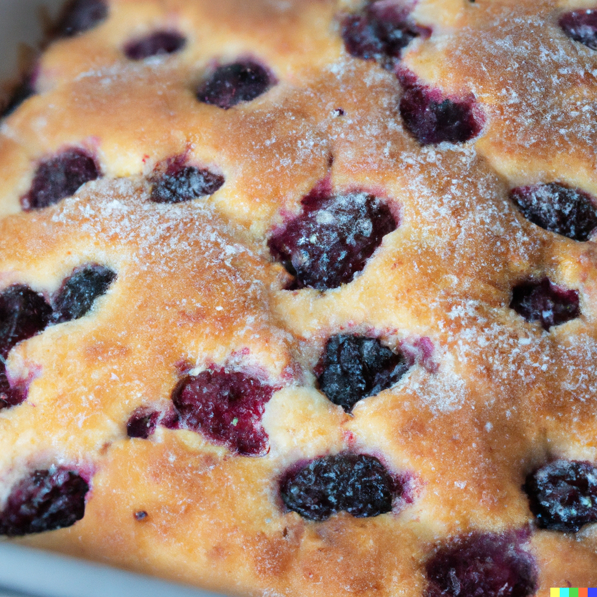

Bramble Cake

Bramble Cake
Bramble Cake is a delicious dessert that embodies the essence of summer. It features a moist cake infused with the flavors of wild blackberries and raspberries, topped with a creamy frosting.
This delightful treat combines the sweetness of the berries with the indulgence of cake, creating a mouthwatering combination that is sure to please.
Ingredients
- 1 box of white cake mix
- 1 cup blackberries
- 1 cup raspberries
- 1 cup water
- whipped cream
Steps
- Preheat the oven according to the cake mix instructions and prepare a round cake pan as directed.
- In a mixing bowl, combine the white cake mix and water. Stir until well blended.
- Gently fold in the blackberries and raspberries, distributing them evenly throughout the batter.
- Pour the batter into the prepared cake pan and bake according to the package instructions or until a toothpick inserted into the center comes out clean.
- Once baked, let the cake cool before serving. Optionally, garnish with whipped cream or sprinkle with powdered sugar. Enjoy your delicious and easy Bramble Cake!